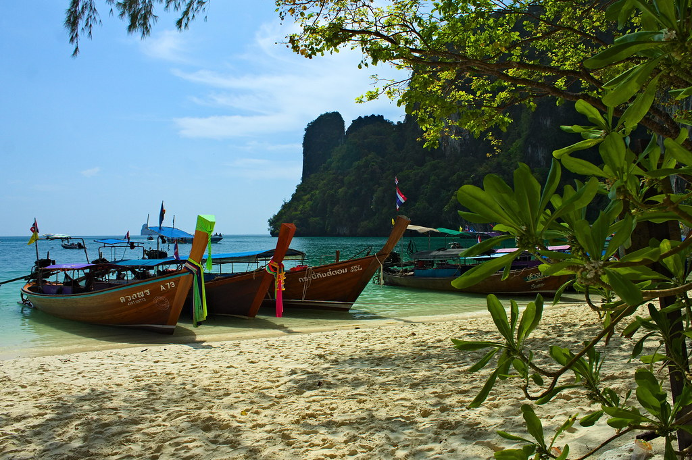
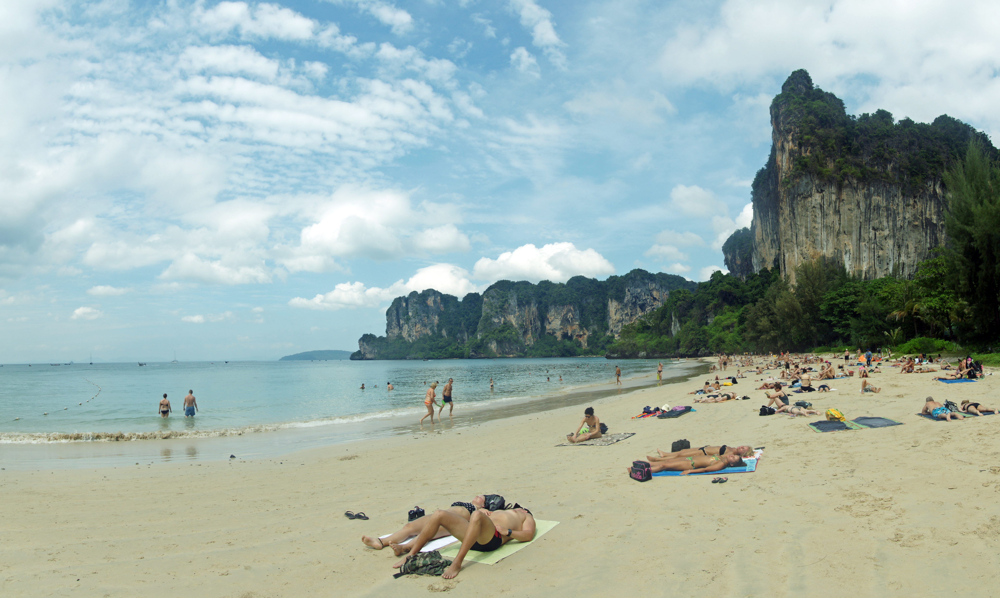
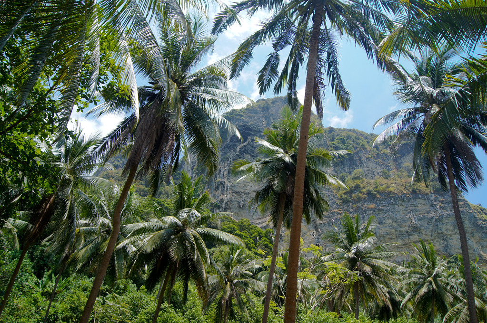
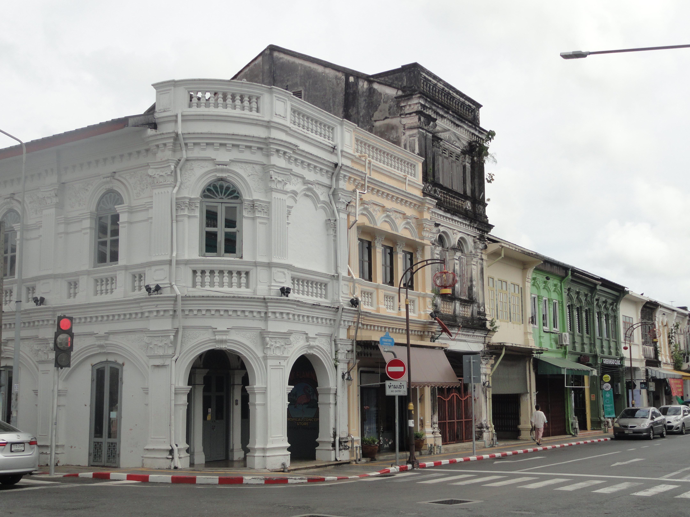
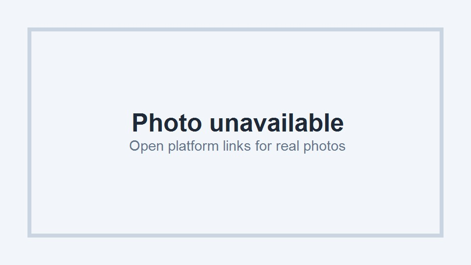
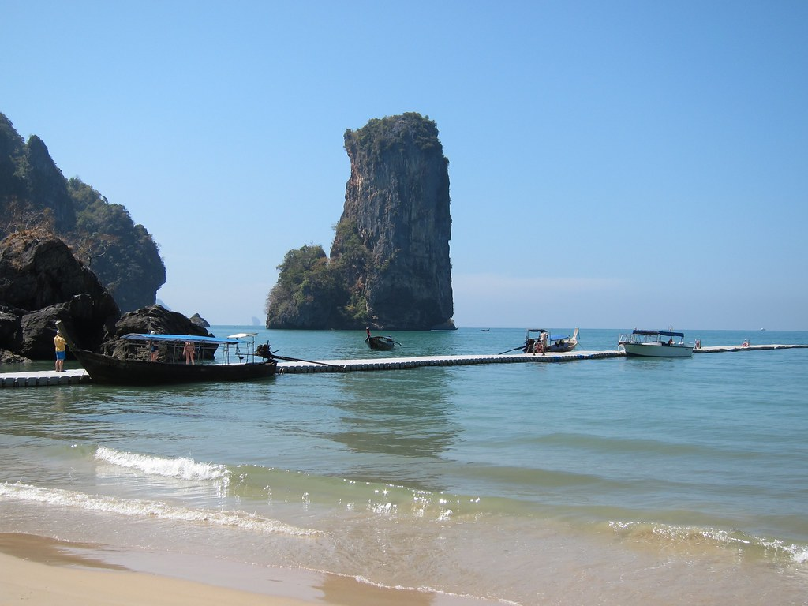
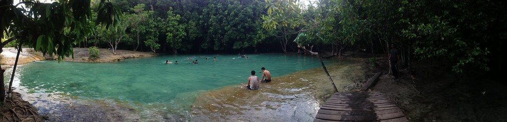
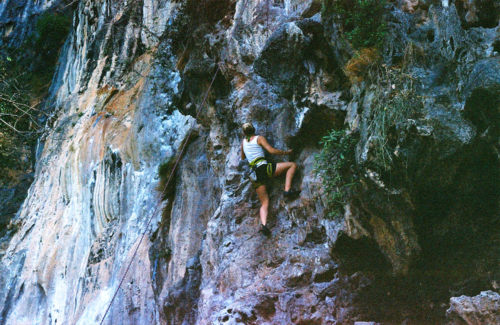
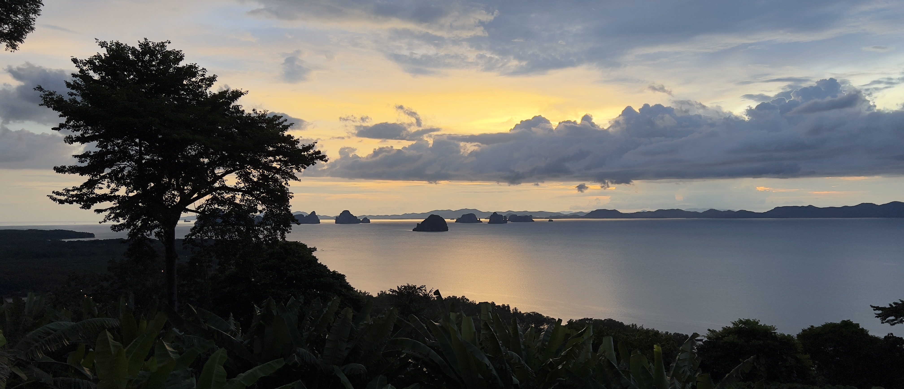

Hong Island
全程只安排一次，避免雨季天天赌海况。
北京出发 · 2大1小1老 · 已订 Mangrovebay Krabi Beachfront Pool Villa 8/1-8/8 · 方案A：8天往返 · 方案B：+ Phuket 2晚，8/10返程 · Hertz自驾 · round-trip 机票优先。
这次不要做“每天出海打卡”的甲米，而是做低密度 Villa staycation：8/1-8/8 固定住 Mangrovebay Krabi Beachfront Pool Villa，只硬安排 Ao Nang Night Market 1次和 Hong Island 1次。若机票价差不大，建议用北京⇄Phuket往返直飞，因为 round trip 通常比 open-jaw / multi-city 更便宜，且 Phuket +2晚能让返程更从容。

全程只安排一次，避免雨季天天赌海况。

不是硬性行程，作为D7机动备选。

从Villa开车进城，建议集中一次解决夜市和补给。

Phuket重点放老街、餐厅、Kata/Karon和海景酒吧。
图片来源记录见 assets/trip-krabi/ATTRIBUTION.md；均为下载到本地的开放/可复用来源，不使用酒店/点评站版权图。
统一使用 Phuket · Koh Tapao Noi tide table 做口径，避免 Ao Nang / Phuket 混用。赶海看最低潮前后约90分钟，出海/上下船看中高潮和当天风浪；以下不是航海导航，Hong Island / Ao Thalane 出发前仍要让船家按当天海况复核。
05:59 低 1.06m · 12:07 高 3.31m · 18:22 低 0.84m
00:28 高 3.03m · 06:31 低 1.07m · 12:37 高 3.27m · 18:51 低 0.86m
00:59 高 3.05m · 07:03 低 1.11m · 13:07 高 3.16m · 19:20 低 0.92m
01:31 高 3.02m · 07:38 低 1.18m · 13:39 高 3.01m · 19:52 低 1.03m
02:09 高 2.96m · 08:18 低 1.29m · 14:16 高 2.82m · 20:30 低 1.18m
02:56 高 2.85m · 09:09 低 1.43m · 15:04 高 2.60m · 21:23 低 1.36m
04:01 高 2.72m · 10:23 低 1.57m · 16:25 高 2.39m · 22:47 低 1.53m
05:41 高 2.65m · 12:15 低 1.59m · 18:33 高 2.33m
00:39 低 1.56m · 07:20 高 2.74m · 14:01 低 1.40m · 20:19 高 2.48m
02:13 低 1.40m · 08:43 高 2.95m · 15:07 低 1.13m · 21:25 高 2.69m
大潮/小潮按当日最高水位 - 最低水位粗分：≥2.1m 大潮、1.3-2.1m 中潮、<1.3m 小潮。日出日落使用 Phuket Kanchanaphisek Lighthouse 公开表；月相/照明用 Phuket 坐标天文计算。8/8-8/10月亮变暗，更适合晚间观星，但仍以云量和雨季天气为准。
这次不只看 Trip.com 航线页，而是用 agent-browser 连接你的浏览器 session，反查携程前端请求。携程国际机票频道使用 https://m.ctrip.com/restapi/soa2/19728/json/fuzzySearch 做低价聚合，payload 形如 {tt:"2", source:"online_flight_intl", segments:[{dcl:["BJS"], acl:["HKT"], ddate:"2026-08-01", rdate:"2026-08-10"}]}。以下为该接口返回的含税低价 CNY/人，最终仍需在携程 App/网页结果页确认具体航班、行李、退改和儿童票。
| 组合 | Ctrip fuzzySearch 低价 | 4人机票 | 额外成本 | 结论 |
|---|---|---|---|---|
| 北京 ⇄ Phuket 8/1-8/10 | ¥2,620/人 · BJS-HKT round trip | ¥10,480 | Phuket⇄Villa自驾；+2晚Phuket酒店 | 当前最优：比8/8返程更便宜，还能自然接Phuket 2晚。 |
| 北京 ⇄ Phuket 8/1-8/8 | ¥2,805/人 · BJS-HKT round trip | ¥11,220 | 8/8需从Villa开回HKT返程 | 若不加Phuket 2晚可用，但价格反而略高。 |
| 北京 ⇄ Phuket 7/30或7/31-8/10 | ¥2,600-2,620/人 · BJS-HKT round trip | ¥10,400-10,480 | 提前1-2晚机场/Phuket酒店约¥700-1,500/晚 | 适合航班晚到/红眼：先住HKT机场或Phuket，8/1白天开去Villa，节奏最好。 |
| 北京 ⇄ Krabi 8/1-8/8 | ¥2,807/人 · BJS-KBV round trip | ¥11,228 | 省HKT⇄Krabi长途自驾，但多为转机 | 价格几乎不比HKT低，且转机更累；只有航班时间显著更好才选。 |
| 北京 ⇄ Krabi 7/31-8/8 | ¥3,089/人 · BJS-KBV round trip | ¥12,356 | 7/31多住1晚 | 不推荐：提前一天飞KBV反而更贵。 |
国际中转路线矩阵读法：横向是出发日期 -1/0，二级列是实际出发路线；不再考虑国内中转，只保留 HKT/KBV 直达机场口径和 HKG/SIN/BKK/KUL 国际中转。纵向是返程停留策略，写清楚从 Phuket 或中转城市停留 0.5/1/2 天后回北京。价格为 Ctrip fuzzySearch CNY/人分段低价合计；航班号/机型仍需 Ctrip 结果列表落地，当前不使用估算。
| 返程路线 / 停留 | 出发 -1 · 7/31 | 出发 0 · 8/1 | ||||||||
|---|---|---|---|---|---|---|---|---|---|---|
| 直达 HKT/KBV | HKG | SIN | BKK | KUL | 直达 HKT/KBV | HKG | SIN | BKK | KUL | |
| +0 · 8/8 Phuket直返 Villa退房当天返京 | 🏆 HKT RT ¥2,805 KBV RT ¥3,089路线：BJS⇄HKT 或 BJS⇄KBV。 HKT适合租车闭环；KBV机场近但票价贵。 航班号/机型：待 Ctrip 结果列表。 | ¥3,265 PEK/PKX-HKG-HKT；HKT-BJS | ¥3,302 PEK/PKX-SIN-HKT；HKT-BJS | ¥2,807 PEK/PKX-BKK-HKT；HKT-BJS | ¥3,086 PEK/PKX-KUL-HKT；HKT-BJS | HKT RT ¥2,805 🏆 KBV RT ¥2,807若8/8必须返，KBV/HKT票价接近；HKT租还车更顺。 | ¥3,397 BJS-HKG-HKT；HKT-BJS | ¥3,323 BJS-SIN-HKT；HKT-BJS | ¥2,807 BJS-BKK-HKT；HKT-BJS | ¥3,134 BJS-KUL-HKT；HKT-BJS |
| +1 · 8/9 Phuket住1晚 8/8 Villa→Phuket，8/9 HKT返 | 🏆 HKT RT ¥2,620 KBV RT ¥3,094 | ¥3,196 HKG入境0.5-1天：Victoria Harbour | ¥3,492 SIN中转：Jewel Changi | ¥2,686 BKK中转：Grand Palace / ICONSIAM | ¥3,007 KUL中转：Petronas Twin Towers | 🏆 HKT RT ¥2,619 KBV RT ¥2,794 | ¥3,273 BJS-HKG-HKT；HKT-BJS | ¥3,513 BJS-SIN-HKT；HKT-BJS | ¥2,717 BJS-BKK-HKT；HKT-BJS | ¥3,055 BJS-KUL-HKT；HKT-BJS |
| +2 · 8/10 Phuket住2晚 推荐：8/8-8/10 Phuket收尾 | HKT RT ¥2,620 KBV RT ¥3,094 | ¥3,136 7/31 HKG 0.5-1天；8/1到HKT | ¥3,181 SIN 0.5-1天；Jewel/滨海湾 | ¥2,686 BKK 0.5-1天；河畔/ICONSIAM | ¥2,965 KUL 0.5-1天；KLCC/夜市 | 🏆 HKT RT ¥2,620 KBV RT ¥2,982 | ¥3,245 BJS-HKG-HKT；HKT-BJS | ¥3,502 BJS-SIN-HKT；HKT-BJS | ¥2,687 BJS-BKK-HKT；HKT-BJS | ¥3,013 BJS-KUL-HKT；HKT-BJS |
| +2 · 中转城市住1晚 8/8离开Phuket/Krabi，8/9从中转城返京 | 不推荐 需另买HKT/KBV→中转城 | HKT-HKG 8/8 + HKG-BJS 8/9：¥1,847返程段 | HKT-SIN 8/8 + SIN-BJS 8/9：¥1,889返程段 | HKT-BKK 8/8 + BKK-BJS 8/9：¥1,525返程段 | HKT-KUL 8/8 + KUL-BJS 8/9：¥1,786返程段 | 同左 | KBV-HKG 8/8 + HKG-BJS 8/9：¥1,907返程段 | KBV-SIN 8/8 + SIN-BJS 8/9：¥1,986返程段 | KBV-BKK 8/8 + BKK-BJS 8/9：¥1,514返程段 | KBV-KUL 8/8 + KUL-BJS 8/9：¥1,701返程段 |
| +3 · 中转城市住2晚 8/8离开泰国，8/10/8/11从中转城返京 | 适合想多玩城市 但酒店/行李成本上升 | HKG返京8/10 ¥789 / 8/11 ¥613；适合维港+早茶 | SIN返京8/10-8/11 ¥1,349；适合Jewel+滨海湾 | BKK返京8/10-8/11 ¥1,221-1,222；适合大皇宫+ICONSIAM | KUL返京8/10 ¥1,166 / 8/11 ¥1,342；适合KLCC+夜市 | 若留Phuket到8/11：HKT RT ¥2,599 | HKT-HKG 8/10 ¥971 + HKG-BJS 8/11 ¥613 = ¥1,584返程段 | HKT-SIN 8/10 ¥923 + SIN-BJS 8/11 ¥1,349 = ¥2,272返程段 | HKT-BKK 8/10 ¥304 + BKK-BJS 8/11 ¥1,221 = ¥1,525返程段 | HKT-KUL 8/10 ¥538 + KUL-BJS 8/11 ¥1,342 = ¥1,880返程段 |
| Skyscanner 对照 | English + CNY 精确日期结果 | 与 Ctrip 比较 | 判断 |
|---|---|---|---|
| BJS ⇄ HKT 8/1-8/10 | Skyscanner / Tianxun 结果页 已切 English (US) + China + CNY；Cheapest 显示 ¥2,724/人，Cathay Pacific，经香港；去程首都 19:40 → 次日10:50 Phuket，返程 18:20 → 次日12:25。 | Ctrip 同日为 ¥2,620/人；Skyscanner 贵 ¥104/人，4人差约 ¥416。 | 价格非常接近，但 Skyscanner 最低价是隔夜转机；若携程可订，仍优先 Ctrip。 |
| BJS ⇄ HKT 8/1-8/8 | Skyscanner / Tianxun 结果页 Cheapest 显示 ¥2,970/人，Sichuan Airlines，经成都；去程首都 20:15 → 次日18:00 Phuket，返程 19:05 → 次日10:25。 | Ctrip 同日为 ¥2,805/人；Skyscanner 贵 ¥165/人，4人差约 ¥660。 | 不推荐：比 Ctrip 贵且去程到达太晚；若只住Villa 7晚，仍优先 Ctrip。 |
| BJS ⇄ KBV 8/1-8/8 | Skyscanner / Tianxun 结果页 Cheapest 显示 ¥3,123/人，China Eastern + Thai VietJet；去程大兴 07:45 → 20:00 Krabi，经昆明+BKK；返程 20:35 → 次日18:15，大概率自助转机。 | Ctrip 同日 KBV 为 ¥2,807/人；Skyscanner 贵 ¥316/人，4人差约 ¥1,264。 | KBV 依旧不占优；除非 Ctrip 具体结果不可订，否则不选 Skyscanner KBV。 |
推荐下单策略：先锁定 8/1-8/10 北京⇄Phuket round trip；若8/1起飞/到达时间不好，再比 7/30或7/31-8/10 加机场/Phuket酒店。Bangkok/KUL/Singapore/Hong Kong 分段票只在“想顺路玩1晚”时考虑，不要为了省钱硬拆票；拆票必须留足过夜或至少6小时以上中转，并重新核算托运行李。
| 取还车 | 首选 Hertz Phuket Airport 取车；若飞 Krabi，则看 Hertz Thailand branches 的 Krabi Airport 柜台。 |
| 车型 | 2大1小1老 + 7-10天行李，建议 Toyota Corolla Cross / Honda HR-V / Toyota Fortuner 级别；不要小轿车硬塞行李。 |
| 证件 | 中国驾照原件 + 国际驾照翻译认证件/IDP口径提前向 Hertz Thailand 确认；泰国靠左行驶，夜间少开山路。 |
| 路程 | Phuket Airport → Mangrovebay/Khao Thong 约 160-180km，通常 2.5-3.5h；Krabi Airport → Mangrovebay 约 30-45min。 |
| 停车 | Mangrovebay 偏安静，必须有车；Ao Nang夜市、Klong Muang、Ao Thalane都靠自驾更灵活。 |
| 天 | 安排 | 住 |
|---|---|---|
| D1 8/1 | 北京 ✈ Phuket 或 Krabi；Hertz取车；抵达 Mangrovebay。当天只入住、熟悉泳池/餐厅/海边，不安排出海。 | Mangrovebay |
| D2 | Villa恢复日：泳池、海边、咖啡、午睡；下午去附近超市补水/水果。参考酒店 TripAdvisor评价：安静、自然、需要车。 | Mangrovebay |
| D3 | 红树林轻活动：上午可做 Ao Thalane kayak 或只在酒店周边看红树林；下午休息。 | Mangrovebay |
| D4 | Ao Nang 夜市日：白天Villa，16:00后开车去 Ao Nang Night Market，吃街头小吃/买补给。大众点评中文口碑入口：点评搜索 Ao Nang Night Market。 | Mangrovebay |
| D5 | Hong Island 唯一出海日：天气好才出发，选半日/小团，避免老人孩子太累；参考 Hong Islands TripAdvisor。若海况差，挪到D6/D7。 | Mangrovebay |
| D6 | 出海后恢复日：泳池 + 午睡；傍晚可去 Klong Muang Beach 看日落，或预订近Villa的 Khaothong Hill 山景晚餐。 | Mangrovebay |
| D7 | 机动日：若前面因雨取消，补 Hong Island；否则三选一：Railay/Phra Nang 半日轻游、Dragon Crest / Khao Ngon Nak 早晨登山（老人不参加）、或 Emerald Pool + Klong Thom Hot Spring 温泉日。 | Mangrovebay |
| D8 8/8 | 退房；若Phuket往返票，早起开回HKT还车返京；若Krabi往返票，KBV还车返京。不要当天再安排景点。 | — |
如果北京⇄Phuket直飞往返票价合适，建议加2晚Phuket：一是返程不赶，二是顺便体验更成熟商业海岛，与安静的Mangrovebay形成对比。
| 天 | 安排 | 住 |
|---|---|---|
| D1-D7 8/1-8/7 | 同方案A，Mangrovebay连住，保留 Ao Nang Night Market 1次 + Hong Island 1次。 | Mangrovebay |
| D8 8/8 | 退房，开车去 Phuket（约2.5-3.5h）；入住 Old Town 或 Kata/Karon。酒店查 Booking Phuket。下午只做酒店/海边恢复。 | Phuket |
| D9 8/9 | Phuket差异体验：上午 Old Phuket Town，午餐 Tu Kab Khao 或 Blue Elephant；下午 Kata/Karon beach 或回酒店休息；傍晚如想山顶/海景酒吧，选 AKOYA Star Lounge，比 Baba Nest 更适合家庭。 | Phuket |
| D10 8/10 | Phuket Airport 还Hertz车，直飞/转机返北京。返程查 Trip.com Phuket-Beijing；上午只安排早餐和机场。 | — |
把“玩”和“活动”统一成点评卡：每个活动都有本地图片、评分口径、适合哪天去、以及 TripAdvisor / 大众点评入口。雨季出海、皮划艇、礁石和赶海都要以当天风浪、船家和潮汐复核为准。

离 Mangrovebay 区域近，适合恢复日轻活动；低潮会泥滩浅，预订时让店家按中高潮安排。
TripAdvisor / 大众点评搜索 / 小红书图片/笔记 / Bing图片搜索
全程只硬排一次出海，天气好才出发；老人孩子建议半日或小团，不要把每天都压在海况上。
TripAdvisor / 大众点评搜索 / 小红书图片/笔记 / Bing图片搜索
只安排一次，顺路解决夜市、饮料、水果、超市补给；避免每天从Villa长距离开车进城。
TripAdvisor / 大众点评搜索 / 小红书图片/笔记 / Bing图片搜索
湿滑台阶和林道较多，雨后不建议；适合体力好的大人清晨挑战，其他人留Villa泳池休息。
TripAdvisor / 大众点评搜索 / 小红书图片/笔记 / Bing图片搜索
视野好但强度大，雨后和正午都不建议；如果安排，只给体力好的成人，孩子老人不硬上。
TripAdvisor / 大众点评搜索 / 小红书图片/笔记 / Bing图片搜索

短程木栈道，可通往 Pai Plong Beach；不要拿食物逗猴，雨后木板可能滑。
TripAdvisor / 大众点评搜索 / 小红书图片/笔记 / Bing图片搜索

适合不出海的雨后/阴天自然日；池边滑，孩子要看紧，老人按体力选择走多少。

攀岩首选区域，初学课程成熟；老人可以在海滩/咖啡等候，不需要参与攀爬。
TripAdvisor / 大众点评搜索 / 小红书图片/笔记 / Bing图片搜索
和安静的 Mangrovebay 形成反差；适合 +2晚方案中做半天城市体验，不需要再安排 Big Buddha。
TripAdvisor / 大众点评搜索 / 小红书图片/笔记 / Bing图片搜索
所有餐厅改成统一点评卡：只有确认对应地点/活动的图片才直接展示并附“图片源”；非真实对应图统一显示 placeholder。每张卡下方保留 TripAdvisor / 大众点评 / 小红书 / 图片搜索入口，用于查看平台真实用户图片和最新推荐。评分以 TripAdvisor/公开点评口径整理为 ⭐，到店前仍需复核当天营业、预约和雨季交通。
早到或返程前比机场内快餐更舒服，适合咖啡、简餐和等机。
TripAdvisor搜索 / 大众点评搜索 / 小红书图片/笔记 / Bing图片搜索
机场附近正餐更稳的选择，适合返程前吃海鲜/泰餐。
TripAdvisor搜索 / 大众点评搜索 / 小红书图片/笔记 / Bing图片搜索
Pad Thai、脆皮猪等本地快餐型正餐，适合不想在机场吃。
TripAdvisor搜索 / 大众点评搜索 / 小红书图片/笔记 / Bing图片搜索
咖啡和轻食口径更适合老人孩子等机，时间宽裕再去。
TripAdvisor搜索 / 大众点评搜索 / 小红书图片/笔记 / Bing图片搜索

Villa近，景观强，D2/D6日落晚餐优先；尽量提前订靠景观位。
TripAdvisor / 大众点评搜索 / 小红书图片/笔记 / Bing图片搜索
海景、瀑布环境和泰式海鲜，适合 Villa 周边正式午餐或晚餐。
TripAdvisor / 大众点评搜索 / 小红书图片/笔记 / Bing图片搜索
评价量少但分高，胜在离Villa区域近和视野好；路偏，天黑前返程。
TripAdvisor / 大众点评搜索 / 小红书图片/笔记 / Bing图片搜索
想换西餐口味时用，不作为主力餐厅；出发前看当天营业。
TripAdvisor搜索 / 大众点评搜索 / 小红书图片/笔记 / Bing图片搜索
评价少但距离友好，适合作为不想远开车时的轻食备选。
TripAdvisor搜索 / 大众点评搜索 / 小红书图片/笔记 / Bing图片搜索
日落视野和氛围型备选，适合不想进 Ao Nang 的晚上。
TripAdvisor搜索 / 大众点评搜索 / 小红书图片/笔记 / Bing图片搜索
约3-4km级别备选，适合海鲜/亚洲菜；需实时复核营业。
TripAdvisor搜索 / 大众点评搜索 / 小红书图片/笔记 / Bing图片搜索
傍晚喝一杯的轻松备选，不作为正餐主力；带老人孩子看氛围即可。
TripAdvisor搜索 / 大众点评搜索 / 小红书图片/笔记 / Bing图片搜索
高性价比泰餐主力，D4夜市日前后优先；热门时段需排队或预约。
TripAdvisor / 大众点评搜索 / 小红书图片/笔记 / Bing图片搜索
孩子想吃肉、连续泰餐后换口味时用；比夜市更正式。
TripAdvisor / 大众点评搜索 / 小红书图片/笔记 / Bing图片搜索
环境更稳，适合正式晚餐和不同口味兼容。
TripAdvisor搜索 / 大众点评搜索 / 小红书图片/笔记 / Bing图片搜索
换口味、咖喱、清真友好；夜市日替代选择。
TripAdvisor搜索 / 大众点评搜索 / 小红书图片/笔记 / Bing图片搜索
咖喱、烤饼、烤肉，适合连续海鲜后换香料口味。
TripAdvisor搜索 / 大众点评搜索 / 小红书图片/笔记 / Bing图片搜索
孩子友好，披萨/意面作为泰餐之外的安全牌。
TripAdvisor搜索 / 大众点评搜索 / 小红书图片/笔记 / Bing图片搜索
家常泰餐和海鲜，适合不想排大店时作为备选。
TripAdvisor搜索 / 大众点评搜索 / 小红书图片/笔记 / Bing图片搜索
想一次吃海鲜时考虑；自助更看当天品质，到店前复核新近评价。
TripAdvisor搜索 / 大众点评搜索 / 小红书图片/笔记 / Bing图片搜索
D6看日落后晚餐，距离比进 Ao Nang 更轻松。
TripAdvisor搜索 / 大众点评搜索 / 小红书图片/笔记 / Bing图片搜索
日落海滩后就近吃饭的稳定备选。
TripAdvisor搜索 / 大众点评搜索 / 小红书图片/笔记 / Bing图片搜索
咖啡和简餐备选，适合老人孩子不想吃太重口时。
TripAdvisor搜索 / 大众点评搜索 / 小红书图片/笔记 / Bing图片搜索
家庭泰餐备选，适合D6或D7不想去Ao Nang时使用。
TripAdvisor搜索 / 大众点评搜索 / 小红书图片/笔记 / Bing图片搜索
看日落和轻食氛围型备选，雨季只在天气好时安排。
TripAdvisor搜索 / 大众点评搜索 / 小红书图片/笔记 / Bing图片搜索
如果去Krabi Town买东西/雨天换口味，可安排午餐或晚餐。
TripAdvisor / 大众点评搜索 / 小红书图片/笔记 / Bing图片搜索
页面曾显示7/16/2026前临时关闭，8月前必须复核营业。
TripAdvisor / 大众点评搜索 / 小红书图片/笔记 / Bing图片搜索
D9老城午餐优先，体验和Krabi Villa完全不同的城市餐厅。
TripAdvisor / 大众点评搜索 / 小红书图片/笔记 / Bing图片搜索
预算更高但环境稳定，适合想把Phuket收尾做得更正式。
TripAdvisor / 大众点评搜索 / 小红书图片/笔记 / Bing图片搜索
海滩后家庭泰餐备选，排队时要看老人孩子状态。
TripAdvisor搜索 / 大众点评搜索 / 小红书图片/笔记 / Bing图片搜索
Phuket海滩日换口味，适合孩子不想继续泰餐时。
TripAdvisor搜索 / 大众点评搜索 / 小红书图片/笔记 / Bing图片搜索
比 Baba Nest 更容易带家庭落地，适合D9日落时段；务必提前订位。
TripAdvisor / 大众点评搜索 / 小红书图片/笔记 / Bing图片搜索
说明：大众点评、TripAdvisor、小红书上的图片多数为平台/用户上传内容，页面不下载复制；非真实对应图统一用 placeholder，真实图会显示“图片源 / original”。每张卡保留入口链接，点击后查看真实图片、笔记和最新评价。出发前按最新营业时间、近期差评和预约要求复核。
| 项目 | 8天版 | + Phuket 10天版 | 备注 |
|---|---|---|---|
| 机票 | ¥12,000-18,000 | ¥12,500-20,000 | Phuket直飞往返优先；round trip 通常更便宜。 |
| 酒店 | 已订 Mangrovebay 7晚 | 已订 Mangrovebay 7晚 + Phuket 2晚 ¥3,000-8,000 | Phuket住Old Town/Kata/Karon，按可取消优先。 |
| Hertz租车 | ¥4,500-7,000 | ¥5,500-8,500 | 含基础租金估算，不含押金/保险升级/异地还车差价。 |
| 活动 | ¥2,000-4,000 | ¥3,000-5,500 | Hong Island 1次为主；Phuket加Old Town、Kata/Karon、AKOYA等低/中成本体验。 |
| 餐饮/油费/杂费 | ¥8,000-11,000 | ¥10,000-14,000 | Villa餐厅+夜市+Phuket餐厅。 |
{kind=link}
{kind=link}
.jpeg){kind=link}